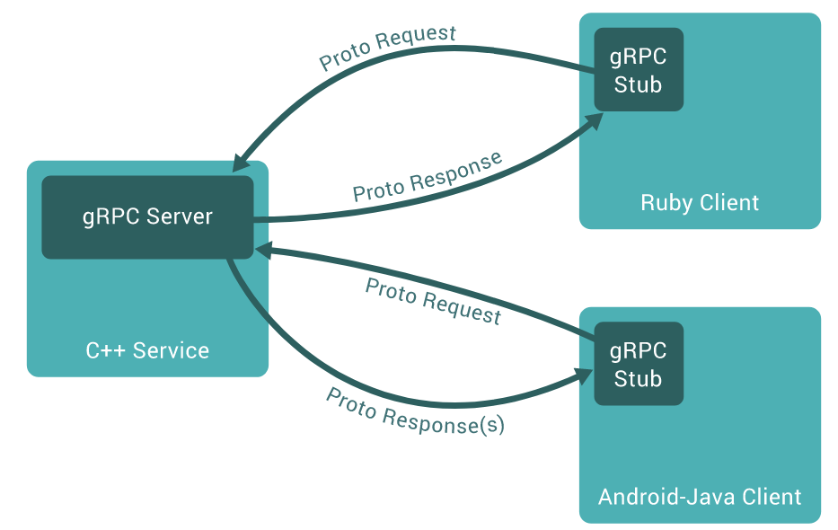

教你用Python搭建gRPC服務
前言
前陣子剛好有個要使用 gRPC 的機會，同事看了一下官網的 Tutorial 覺得一時之間有點迷路，所以就寫了一份比較簡單的 gRPC Tutorial for Python，應該可以讓需要的人更快入門。
protocol buffers 簡介
在介紹 gRPC 之前先來講講 protocol buffers。我們在不同 service 之間做訊息溝通的時候，最常使用的也許是透過 json 來做傳遞，不過在使用 json 上面可能會遇到以下幾個問題：
- json 的 serialize/de-serialize 速度太慢
- 透過 json 傳資料的結構不夠清楚，得靠 API 文件搞定
- 用 json 傳資料的 size 太大
protocol buffers 便是 Google 為瞭解決以上問題而生，它可以透過一個 .proto 檔案，在各語言生出相對應的檔案使用。目前支援的程式語言很多，有 Python、golang、js、java 等等。
grpc 簡介
有了 protocol buffers 之後，google 更進一步的推出了 gRPC。透過 gRPC，我們可以在 .proto 檔案當中也一併定義好 service，讓遠端使用的 client 可以如同呼叫本地的 library 一樣使用，不用再自己處理 routing 、連線等等的問題。

上圖是從 gRPC 官網上面截下來的圖，可以看到 gRPC Server 是由 C++ 撰寫，client 則分別是 Java 以及 Ruby，Server 跟 Client 端則是透過 protocol buffers 來做傳遞。
開發 gRPC 流程
接下來讓我們來用 Python 開發一個最簡單的 gRPC service。分別有以下四個部分：
- 環境安裝 – 最基本的套件安裝
.proto檔案 – 定義 protocol buffers 還有 service- Server – server 的 code
- Client – client 呼叫 server 的 code
最後完成的程式碼會放在 https://github.com/daikeren/gprc_tutorial
環境安裝以及設定
首先我們要安裝相對應的套件，這邊我們用 pipenv 來作為環境管理工具。輸入以下指令安裝 grpcio 以及 grpcio-tools。
pipenv install grpcio grpcio-tools
接著，我們先來定義我們 service 的功能，我們這邊為了 demo，我們這個 service 做的事情很簡單，只是將傳遞進來的 name 前面加上 “Hello” 再回傳回去。這邊當然是可以改成任何我們想要 Python Function。
# hello.py
def hello(name):
return f"Hello {name}"
.proto 檔案
接下來，我們創建一個 hello.proto 檔案，裡面描述了我們要使用的 message 以及 service
syntax = "proto3";
message HelloRequest {
string value = 1;
}
message HelloResponse {
string value = 1;
}
service Hello {
rpc Hello(HelloRequest) returns (HelloResponse) {}
}
這邊的 message 代表了我們要跟 gRPC 傳遞的參數、型別，service 則是敘述了 service name 以及傳入、傳回的參數。之後我們會透過 gprc_tools 來讀取 .proto 檔案產生相對應的 Python class。這邊可以看到我們定義的 message 以及 service 如下：
- message: 這邊定義了兩種 message，分別是
HelloRequest以及HelloResponse，裡面都只有一個叫做value的欄位，形態是string - service: 這邊定義了一個 service，裡面只有一個叫做 Hello 的 rpc 傳入值是
HelloRequest，傳回值則是HelloResponse
接下來，我們輸入以下指令為 Python 產生 gRPC 的 class
pipenv run python -m grpc_tools.protoc -I. --python_out=. --grpc_python_out=. hello.proto
你會看到多出了兩個檔案
hello_pb2.py: 定義了相對應的 message classhello_pb2_grpc.py: 定義了相對應的 service class
Server
有了 hello_pb2.py 以及 hello_pb2_grpc.py，我們就可以開始實作我們的 gRPC server，詳細的程式碼如下：
# server.py
from concurrent import futures
import time
import grpc
import hello_pb2
import hello_pb2_grpc
import hello
# 創建一個 HelloServicer，要繼承自 hello_pb2_grpc.HelloServicer
class HelloServicer(hello_pb2_grpc.HelloServicer):
# 由於我們 service 定義了 Hello 這個 rpc，所以要實作 Hello 這個 method
def Hello(self, request, context):
# response 是個 HelloResponse 形態的 message
response = hello_pb2.HelloResponse()
response.value = hello.hello(request.value)
return response
def serve():
# 創建一個 gRPC server
server = grpc.server(futures.ThreadPoolExecutor(max_workers=10))
# 利用 add_HelloServicer_to_server 這個 method 把上面定義的 HelloServicer 加到 server 當中
hello_pb2_grpc.add_HelloServicer_to_server(HelloServicer(), server)
# 讓 server 跑在 port 50051 中
server.add_insecure_port('[::]:50051')
server.start()
try:
while True:
time.sleep(86400)
except KeyboardInterrupt:
server.stop(0)
if __name__ == '__main__':
serve()
接著我們可以輸入以下指令啟動 gRPC server
pipenv run python server.py
Client
client side 的 code 很單純，就是建立一個 channel 連線到 gRPC server，再用 stub 來呼叫。
# client.py
import grpc
import hello_pb2
import hello_pb2_grpc
# 連接到 localhost:50051
channel = grpc.insecure_channel('localhost:50051')
# 創建一個 stub (gRPC client)
stub = hello_pb2_grpc.HelloStub(channel)
# 創建一個 HelloRequest 丟到 stub 去
request = hello_pb2.HelloRequest(value="World")
# 呼叫 Hello service，回傳 HelloResponse
response = stub.Hello(request)
print(response.value)
因為我們已經在 localhost 跑起來 server 了，執行以下的 client 程式碼：
pipenv run python client.py
Hello World
小結
看到這邊應該可以理解一個簡單的 gRPC 該怎麼實作，相信以這為基礎應該可以很容易擴展出未來更多的 gRPC 應用。
參考
- https://www.icoding.co/2020/07/grpc-tutorial-for-python